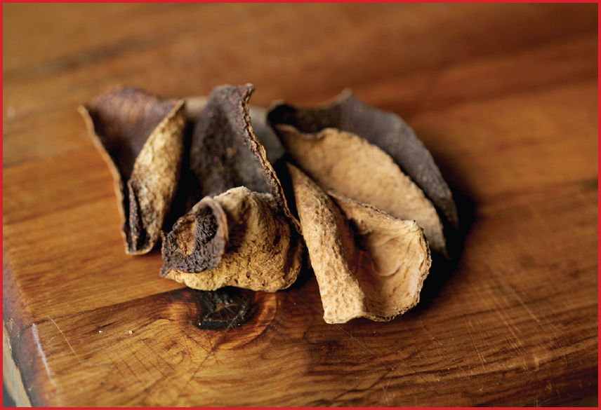

How to Buy and Store Chen Pi (Dried Mandarin Peel)

Hunan- or Sichuan-style orange peel beef is traditionally made with chen pi, the dried peel of a specific type of mandarin from Xinhui in Guangdong province. The fruits are small and spherical with orange flesh hidden under a thin rind that’s picked while it’s still green. To produce chen pi, the rinds are removed whole (with their underlying pith), strung up, then hung in the open air for two to three weeks, during which time they dry, intensify in flavor, and acquire a dark brown hue. They’ve been used in traditional Chinese medicine since at least the first century, and they make a wonderfully aromatic, slightly bitter infusion. (You tea nerds out there may have also seen whole Xinhui mandarin rinds filled and aged with pu’er tea, meant to be steeped all together.)
In all honesty, the flavor doesn’t resemble fresh oranges at all, and recipes for orange beef that call for fresh orange juice or orange peel are a far cry from both the Chinese original and the Chinese American version, which, at its best, is still made with actual chen pi.
Thankfully, chen pi is relatively easy to find in the United States, both from online retailers or in the dried ingredient or herbal section of a Chinese supermarket, or you can make them yourself if you have access to underripe mandarins, tangerines, satsumas, or any other thin-skinned orange citrus fruit. Traditionally, the rind of the fruit is carefully scored into thirds, then peeled off the fruit in a single piece resembling a three-petaled flower. If you want to try making it yourself, you can take the peel off however you like, so long as the pieces remain relatively large and chunky and are free of any of the underlying fruit. You can string them up if you’d like, but it’s just as effective (and easier) to spread them on a wire rack set in a rimmed baking sheet and leave them out on the porch in the sunlight for a couple of weeks.
Like dried chiles, chen pi should be dry but still leathery and pliable. They can be stored in an airtight container in a cool, dark pantry for several months or in a zipper-lock freezer bag in the freezer indefinitely.